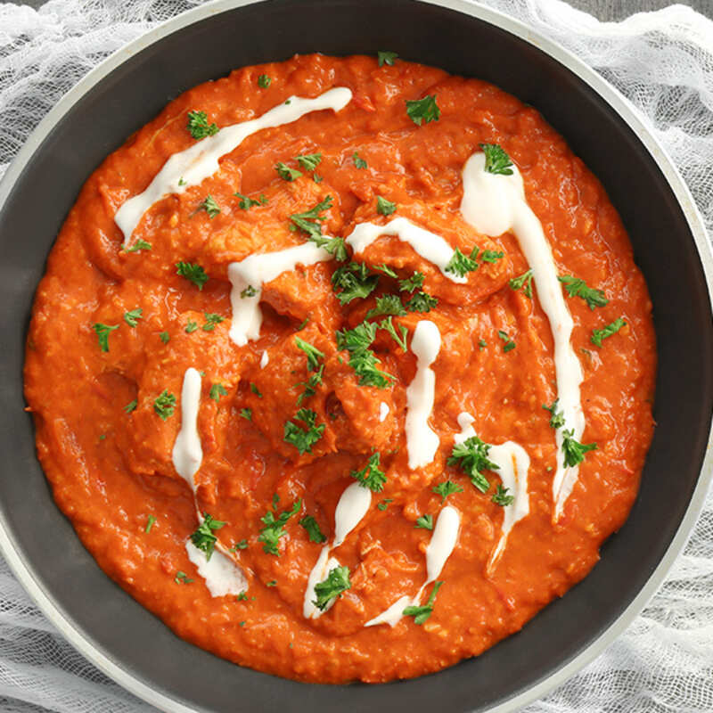
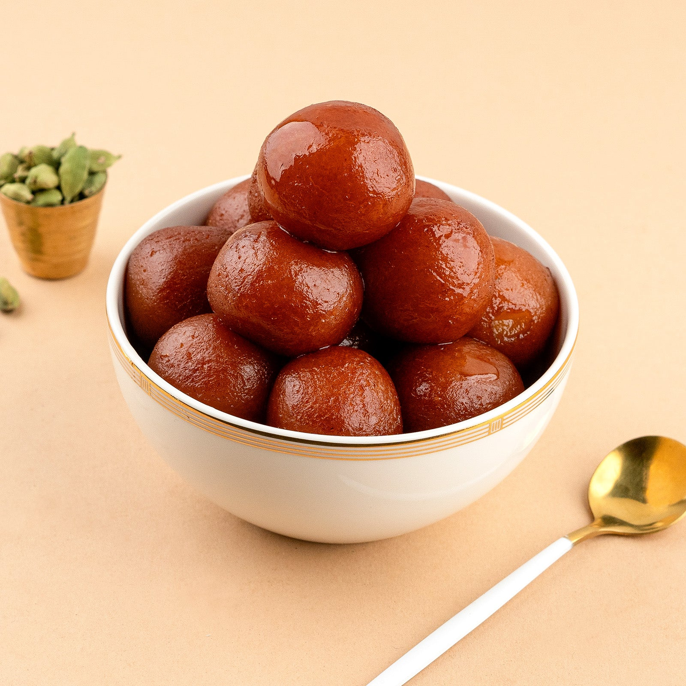

Discover the authentic taste of Indian home cooking with our easy-to-follow recipes, cooking tips, and kitchen secrets passed down through generations.

Creamy, rich, and flavorful chicken curry that's perfect for any occasion. A restaurant favorite made easy at home!
Crispy South Indian crepe filled with spiced potato filling. A breakfast classic that everyone loves!

Soft, sweet milk dumplings soaked in fragrant sugar syrup. The perfect ending to any Indian meal!
Always add spices in stages. Toast whole spices first to release their oils, then add ground spices towards the end of cooking to preserve their flavor and aroma.
Rinse rice 2-3 times until water runs clear. Use a 1:2 ratio (rice:water) and let it rest covered for 5 minutes after cooking before fluffing with a fork.
Chill onions in the fridge for 30 minutes before cutting, or cut them near running water. This reduces the release of irritating compounds.
Store leafy vegetables wrapped in newspaper inside the fridge. The newspaper absorbs excess moisture and keeps them fresh for up to a week.
Place a wooden spoon across the pot while boiling milk. It breaks the surface tension and prevents overflow.
Replace heavy cream with Greek yogurt, use olive oil instead of ghee for everyday cooking, and add grated vegetables to increase nutrition in curries.
Have a family recipe you'd love to share? We'd love to hear from you!